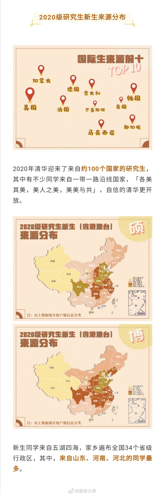

又是清华官方微博统计星座占星术这种伪科学，一点都不长进。给全国人民做什么样的示范？//@马少平THU:新生大数据@清华大学:【2020清华大学研究生新生大数据出炉！】8月的清华园，金秋送爽，不觉间校园里又迎来了青春的面庞，与我们共同书写清华新的篇章。度过了漫长的假期，清华园终于等到了新的主人！2020年清华园的新鲜血液，他们究竟年龄几何、来自何方？2020年清华大学研究生新生大数据带你一探究竟🤗（来源：@清华研通社 ）#你好新同学##清华新生报到# 北京·清华大学 北京·清华大学 北京·清华大学